Local preview of github-profile/README.md — GitHub profile chrome, not the live profile page.


I build AI systems that have to survive production — tool-calling loops, multi-index retrieval, and the eval harness that tells you whether a prompt change helped. By day I ship agentic workflows inside Oracle Fusion SCM. Outside that I expand kubeflow/docs-agent through Google Summer of Code 2026 and write about inference, agents, and RAG.
/now

git log --author=kmr-rohit

cat ~/writing
